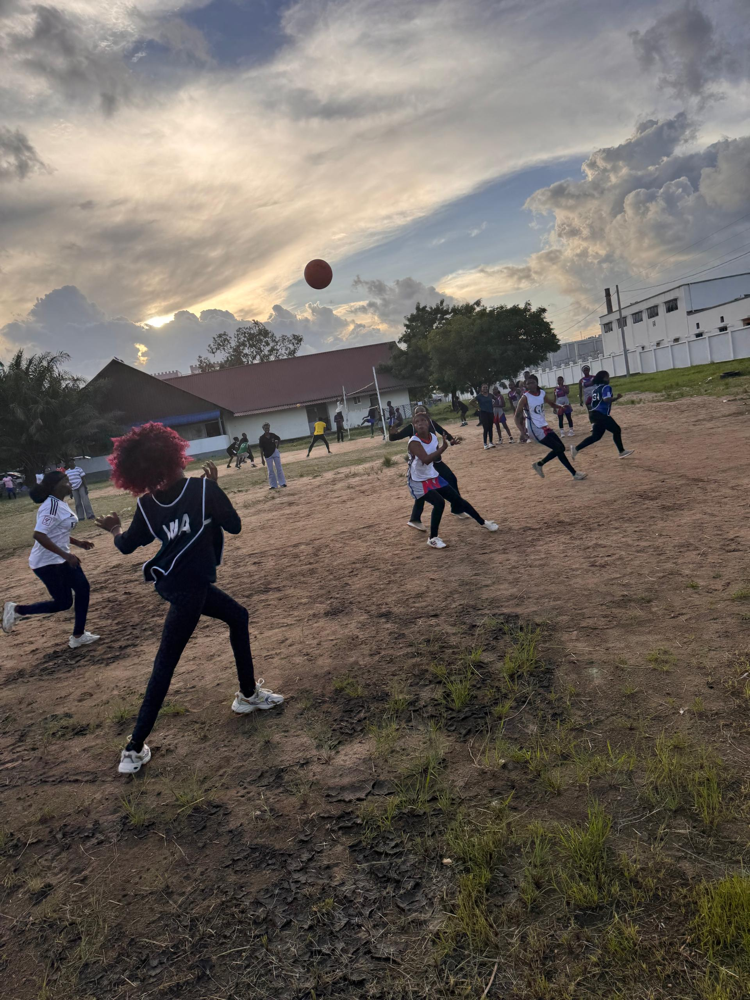

Hello!
I'm Gloria-Clara Mujuni, a Computer Science student at the University of Dar es Salaam (UDSM). I love diving into technology and specifically driven to Data Science, with it i believe various aspects in life like healthcare and finance are transformed by turning raw information and numbers into real solutions.
| LEVEL | INSTITUTION | DURATION |
|---|---|---|
| Degree | University of Dar es Salaam (UDSM) | 2025-present |
| A-Level | St.Mary's Mazinde Juu Secondary School | 2023-2025 |
| O-Level | Centennial Christian Seminary | 2019-2022 |
| Primary | Philadelphia Pre & Primary School | 2012-2018 |
